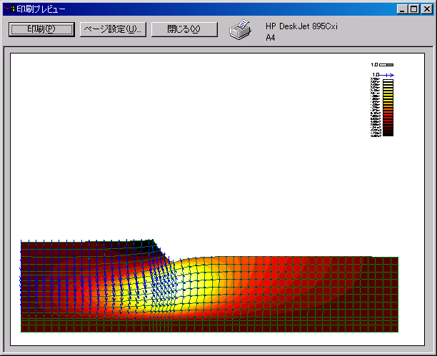

6-2-2.印刷プレビュー
メイン画面メニューの[ファイル]−[印刷プレビュー]を選択すると下画面が表示されます。印刷プレビューはプリンタで印刷する前に、印刷結果を画面に表示します。

<ボタン操作>
ページ設定
＜ページ設定＞ボタンをクリックするとページ設定画面が表示され、ページの設定を行うことができます。
印刷
＜印刷＞ボタンをクリックすると印刷が開始されます。
閉じる
＜閉じる＞ボタンをクリックすると印刷プレビューを終了します。
前項[レイアウトの保存]へ
|
次項[ページ設定]へ